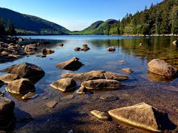
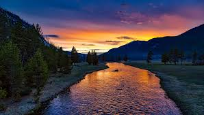
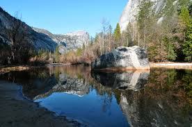
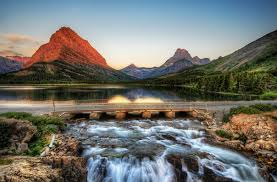
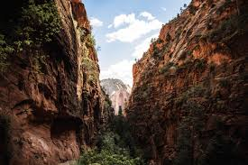
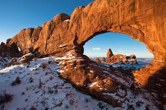

Intro
Something I’ve always wanted to do is visit all the national parks. So far, I’ve been to Acadia, Shenandoah, and the Great Smoky Mountains. So, three of them. Out of 59!
Sooo, it’s achievable, but maybe not in the near future. However, just because I can’t visit all of them right now, doesn’t mean I can’t start looking into it.
The Pitch
My proposal is to create a blog all about National Parks.
My desired goal is to give fellow travel enthusiasts an outlet to share ideas, pictures, and whatever they feel is relevant to a specific national parks, or national parks in general. This is intended to be more informal than the actual national park website, mainly giving people an outlet to share their experiences. Much like our class website, people will have the ability make posts and categorize information. This will be done by establishing categories, much like how on WordPress gives us the ability to categories our posts into reflections, for instance. Tags will also be essential to sort the elements of the posts as well.
Website Details
-
Home
This is the default page. It will show the most recent posts, or allow you to filter by popularity (number of hits), alphabetically, or recency.
-
About
This section will give general information on this blog and how to navigate it.
-
Find
This section will have a search engine to allow a user to find more specfic posts. There will be a number of categories listed via a drop down box. This might include location, genre of posts, photography, etc. Bloggers must use tags in their posts to allow for more specificty for the search engine. You will also have the option of organzing the posts by date, popularity, or alphabetically.
-
Gallery
This section will display all the pictures collected from individual posts. It will give the option to sort by location.
-
Contact
This section will give a form (essentially like a google docs form) to allow any viewer to contact the owner of the website to provide comments, questions, or recommendations.
Tasks
- Research National Parks
- Develop a method for users to create posts, categorize them, and create tags
- Develop a search engine
- Organize website in a manner that is visually appealing and easy to navigate
     